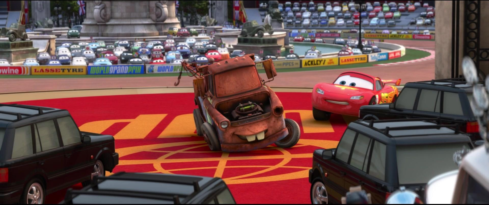
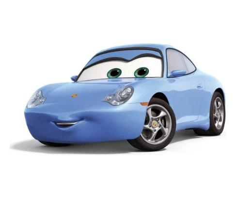

Cars 2
¡Una aventura internacional!

Cars 2 es la segunda película de la saga, estrenada en 2011 por Disney y Pixar. En esta ocasión, Rayo McQueen y Mate salen de Radiador Springs para participar en una competencia internacional.
La historia combina las emocionantes carreras con una misión de espionaje que lleva a Mate a vivir una aventura completamente inesperada.
Ficha técnica
2011
Pixar Animation Studios
Walt Disney Pictures
John Lasseter
Animación, aventura y comedia
Sinopsis completa
Rayo McQueen recibe una invitación para competir en el Gran Prix Mundial, una carrera organizada en diferentes ciudades del mundo.
Mate acompaña a Rayo durante el viaje. Sin embargo, termina involucrado en una misión secreta cuando conoce a Finn McMissile y Holley Shiftwell, dos agentes que investigan un misterioso plan.
Mientras Rayo intenta demostrar que puede competir con los mejores corredores, Mate descubre que su personalidad y sus habilidades pueden ser útiles para ayudar a resolver el misterio.
La aventura lleva a los protagonistas a lugares como Tokio, Italia, París y Londres, donde deberán confiar en sus amigos para superar los desafíos.

El Gran Prix Mundial
El Gran Prix Mundial es una competencia internacional que reúne a corredores de diferentes países. Su objetivo es demostrar quién es el automóvil más veloz en distintas pistas.
- Tokio, Japón.
- Porto Corsa, Italia.
- Londres, Reino Unido.
Cada escenario presenta nuevos retos, paisajes y competidores para Rayo McQueen.
Personajes destacados

Mate
El mejor amigo de Rayo. Se convierte accidentalmente en parte de una misión internacional de espionaje.

Sally Carrera
La amiga especial de Rayo, quien forma parte de su vida en Radiador Springs.

Guido
El pequeño automóvil italiano que destaca por su rapidez al cambiar neumáticos.
La importancia de la amistad
Cars 2 muestra que la amistad necesita confianza, comprensión y respeto. Mate aprende que no necesita cambiar su personalidad para ser importante.
También enseña que debemos valorar a las personas que nos acompañan, incluso cuando tienen formas diferentes de pensar y actuar.
Curiosidades de Cars 2
Curiosidad 1:
Cars 2 se estrenó cinco años después de la primera película.
Curiosidad 2:
La película presenta escenarios inspirados en ciudades
de diferentes países.
Curiosidad 3:
Mate tiene un papel central en la historia de espionaje.
Curiosidad 4:
La película mezcla las carreras automovilísticas
con elementos de las historias de agentes secretos.
¿Qué sigue después?
La aventura continúa con Cars 3, donde Rayo McQueen tendrá que enfrentarse a una nueva generación de corredores.
Continuar con Cars 3 Ver personajes